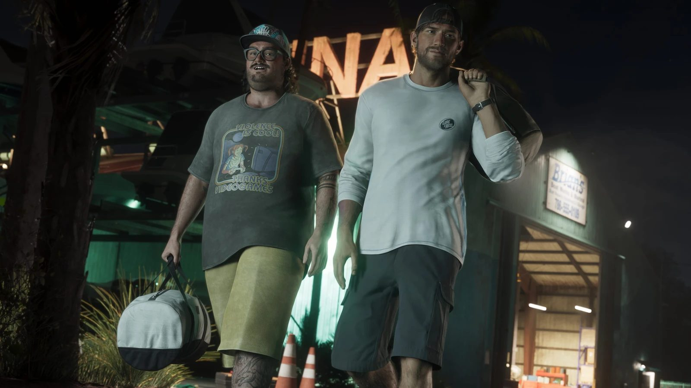

Unwanted Attention: steal the Phoenix

Mission facts
- Chapter: Chapter 1 — mandatory story mission, needed for 100% completion. (Reported)
- Mission number: early Chapter 1. Trackers disagree on the exact number, because several missions are open at once and can be played in different orders. (Reported)
- Given by: Cal Hampton. (Reported)
- Unlock: finish Gone Fishing first. (Reported)
- Where: starts at the waterfront in the north of Key Lento; the impound is in Hamlet, on Penny Bun Street. (Reported)
- You play: Jason.
- Reward: the police radio scanner app (passive — it helps in later chases) plus $150 cash at Brian's garage. (Reported)
Where Unwanted Attention starts
Look for the "Go See Cal" marker: Cal is fishing by the waterfront in the north of Key Lento. Get into the driver's seat of his brown Bravado Bison pickup and wait for him to climb in, then drive the pair of you to Hamlet — roughly a mile north-west. There is a toll booth on the way: it costs $5 in your own car and is free in Cal's truck. (Reported) One naming note: some guides call the starting area Corsair Key or Catalan Key instead of Key Lento — the spot itself is the same waterfront. (Reported, sources differ)
Step by step
- Meet Cal at the waterfront and drive his Bison to the Hamlet impound.
- Sneak into the impound yard (next section) and find the red Phoenix at the back.
- Free the Phoenix from the tow truck, get in, and wait at the gate as it opens.
- Drive out and lose the police — leave the search zone.
- Repair the Phoenix if it is damaged, then respray it at the Pay 'n' Spray in Hamlet.
- Park it in Brian's marked garage and collect the $150 from the back room.
- Lower your recognition: swap your hat and glasses until their icons turn from red to white.
- Buy a new outfit at the gun store next door — the $150 covers it.
Before any mission like this, a manual save is cheap insurance — GTA 6 has no mission replay (Reported).
Getting into the impound and freeing the Phoenix
Climb over the fence, then use the containers in the back corner to get over the next fence and drop into the yard; one guide also notes a break in the barbed wire on the east side. Move quietly if you can: knocking out a guard sends a police patrol to check the yard, so stealth is the cleaner route. The red Phoenix sits at the back, hooked to a tow truck. (Reported)
Freeing the car — one honest warning: most walkthroughs say to get into the tow truck and press R3 to unhook the Phoenix, then get straight into the Phoenix. A few guides instead describe a release switch at the rear of the truck. Follow the prompt your own screen shows; the result is the same either way. (Reported, sources differ)
You may also spot a container that needs a cut-off tool. That tool is not available in Chapter 1 — guides say it unlocks later in the story — and the container is not part of this mission's objective, so leave it and move on. (Reported)
Losing the police
The gate opens slowly, and the police will spot you on the way out no matter how clean the entry was. If a guard grabs you, tap Square/X to break free. Then escape the flashing blue-and-red search area on the minimap — cut through corners and off-road, then take a fast straight. Afterwards a red "heat" outline stays on the map: the police remember your clothes and your car, which is why the next steps matter. Our wanted and heat guide explains the whole system. (Reported)
Respray and lowering recognition
Once the chase ends, the Pay 'n' Spray in Hamlet is marked on your map. If the Phoenix took damage, the guides describe a free repair option before the paint — then respray the car. Park it in Brian's marked garage and pick up the $150 in the back room. To drop the remaining heat, open the item wheel (hold L1/LB), switch to headwear and glasses (R1/RB) and press X/A on each until its icon turns from red to white. Finish by buying an outfit at the gun store next door. (Reported)
Where the car ends up afterwards is covered in our GTA 6 garages guide.
100% tip: scan cars with WAiNK
While you are inside the impound, scan the cars around you with the WAiNK app (hold Up on the d-pad, aim, and hold R1/RB). Base-model scans count towards the 200 of 277 needed for the 100% checklist, and story progress counts even though the checklist itself only appears after the story. (Reported)
Previous and next missions
Unwanted Attention unlocks after Gone Fishing. In the order most trackers list Chapter 1, the next mission is Pipework — but several Chapter 1 missions are open at the same time, so your own order may differ. See the full list on our GTA 6 missions page. (Reported)
FAQ
Is Unwanted Attention a mandatory mission in GTA 6?
Yes. Unwanted Attention is a mandatory Chapter 1 story mission and counts towards 100% completion. (Reported)
What is the reward for Unwanted Attention in GTA 6?
The police radio scanner app, which works passively in later chases, plus $150 in cash collected at Brian's garage. (Reported)
Where is the Phoenix in Unwanted Attention?
At the back of the police impound in Hamlet (Penny Bun Street), hooked up to a tow truck. Free it, then drive it out yourself. (Reported)
How do you lose the cops in Unwanted Attention?
Leave the flashing search area on the minimap, then respray the Phoenix at Pay 'n' Spray and change your hat and glasses until the recognition icons turn from red to white. (Reported)
Can you miss anything in Unwanted Attention?
Nothing story-related. The only extra is scanning cars in the impound with the WAiNK app, which counts towards the 200 of 277 scans needed for 100% completion. (Reported)
Sources checked 23 November 2026: PowerPyx, IGN, Exputer GTA 6 Wiki and NerdsChalk walkthroughs, with GTABoom, GamesRadar and Alcast checked on the repair and cut-off tool points — they agree on Cal as the giver, the Hamlet impound, the Phoenix, the respray and the $150; they differ on the starting area's name, the exact mission number and how the Phoenix is unhooked, and those differences are marked on this page. Labels: Confirmed = officially stated or multiply verified; Reported = claimed by sources, not yet officially confirmed; Not announced = no reliable information yet. Walkthrough steps come from player guides and may vary or be patched.